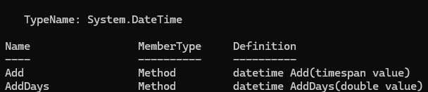
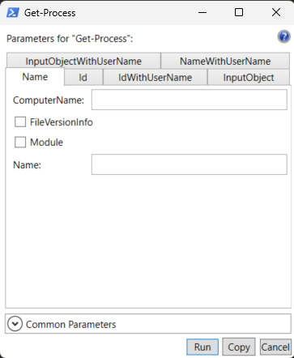

🧭 Sessão 3: Objetos, parâmetros, pipeline, output, exportações
🎯 Objetivo Nesta sessão vamos aprofundar o entendimento sobre como o PowerShell apresenta e manipula o output dos comandos, como personalizar o ambiente de trabalho, e introduzir funções simples para reutilização de lógica.
1. Objetos , Propriedades e Métodos
No PowerShell, quase tudo é um objeto. Isso significa que os comandos não devolvem apenas texto, mas sim objetos com propriedades e métodos que podes explorar e manipular.
1.1. O que é um objeto?
Um objeto é uma estrutura que contém:
- Propriedades – informações sobre o objeto (ex: nome, tamanho, data de criação)
- Métodos – ações que o objeto pode executar (ex: copiar, apagar, converter)
1.2. Como identificar propriedades e métodos?
Podes visualizar as propriedades e métodos de um objeto através de comandos que mostrem o seu conteúdo completo. Este comando mostra todos os métodos e propriedades disponíveis no objeto $hoje, que representa a data e hora atual.
$hoje = Get-Date
$hoje | Get-Member
1.3. Aceder a propriedades
Podes visualizar os valores das propriedades de um objeto com:
$hoje | Format-List *
Podes aceder a uma propriedade com o operador .
Exemplo:
$hoje.Year
$hoje.Month
$hoje.DayOfWeek
$hoje.Year devolve o ano atual (ex: 2025)
$hoje.Month devolve o número do mês (ex: 4)
$hoje.DayOfWeek devolve o dia da semana por extenso (ex: Friday)
1.4. Invocar métodos
Os métodos são ações que um objeto pode executar. Para invocar um método, usas o operador de ponto seguido de parêntesis (). Podes descobrir quais os métodos disponíveis para um objeto com o comando: $objeto | Get-Member
Exemplo:
$hoje | Get-Member
Isto mostra todos os membros do objeto $data, incluindo os métodos como AddDays, AddHours, ToShortDateString, etc.
 O método AddDays() pertence ao tipo System.DateTime Aceita um número (double) como argumento, que representa o número de dias a somar ou subtrair. O resultado é um novo objeto datetime com a data ajustada.
- O método chama-se AddDays
- Recebe como parâmetro de entrada um valor do tipo double (por exemplo: 1, 2.5, -3)
- Devolve como resultado um objeto do tipo datetime
-
Exemplos
$maisMeioDia = $hoje.AddDays(0.5) $amanha = $hoje.AddDays(1)
🔎 Nota
Get-Location | Get-Member mostra-te os métodos e propriedades que podes usar sobre os objetos devolvidos pelo comando Get-Location, e não sobre o próprio comando.
Se escreveres:
Get-Location.ToString()
O PowerShell interpreta isto como uma tentativa de chamar o método ToString() sobre o comando Get-Location em si, e não sobre o objeto que ele devolve.
Ora, Get-Location é um comando, não é um objeto. Estás, na prática, a tentar aplicar .ToString() a um scriptblock implícito, o que resulta num erro ou num comportamento inesperado.
A forma correta de o fazer é com parêntesis:
(Get-Location).ToString()
Assim, o PowerShell executa primeiro o comando Get-Location e só depois chama o método ToString() sobre o objeto retornado (que é do tipo PathInfo).
Documentação oficial: https://learn.microsoft.com/en-us/powershell/scripting/learn/ps101/03-discovering-objects
1.5. 🧩 Exercícios práticos
🧩 Exercício 1
- Cria uma variável
$frasecom o valor “PowerShell é poderoso”. - Mostra o comprimento total da frase usando a propriedade adequada.
Resposta
$frase = "PowerShell é poderoso" $frase.Length🧩 Exercício 2
- Cria uma variável
$textocom o valor"PowerShell é fixe". - Converte para maiúsculas.
- Verifica se contém a palavra
"fixe".
Resposta
$texto = "PowerShell é fixe" $texto.ToUpper() $texto.Contains("fixe")🧩 Exercício 3
- Guarda a data atual numa variável chamada
$hoje. - Cria uma nova variável
$amanhacom a data de amanhã. - Mostra o dia da semana correspondente.
Resposta
$hoje = Get-Date $amanha = $hoje.AddDays(1) $amanha.DayOfWeek🧩 Exercício 4
Usa o comando Get-Location e acede à propriedade que te mostra o caminho atual da localização.
Resposta
(Get-Location).PathUsa o mesmo comando e chama o método que devolve o o caminho atual da localização.
Resposta
(Get-Location).ToString()Nota
Ambos os comandos devolvem exatamente o mesmo texto — o caminho atual. Isto acontece porque o método ToString() do objeto PathInfo foi implementado para devolver o mesmo valor da propriedade Path. Este é um bom exemplo de como métodos podem ser usados para produzir representações legíveis de objetos, mesmo que haja uma propriedade que contenha o mesmo valor.2. Parâmetros em comandos
Muitos comandos no PowerShell aceitam parâmetros para alterar o seu comportamento ou filtrar os resultados.
2.1. O que são parâmetros?
- Um parâmetro é uma opção que controlas ao chamar um comando.
- Um argumento é o valor que passas a esse parâmetro.
Exemplo:
Get-Process -Name "notepad"
-Nameé o parâmetro"notepad"é o argumento
2.2. Como descobrir os parâmetros disponíveis?
Usa os seguintes comandos:
Mostra todos os parâmetros, exemplos e descrições. Get-Help Get-Process -Full
Mostra apenas os parâmetros
Get-Help Get-Process -Parameter *
Mostra a sintaxe resumida. Get-Command Get-Process -Syntax
Abre uma janela gráfica com os parâmetros Show-Command Get-Process
2.3. Show-Command — Interface gráfica para explorar cmdlets
O Show-Command abre uma interface gráfica (GUI) onde podes preencher os parâmetros de um cmdlet. É especialmente útil para quem está a começar ou quer explorar rapidamente os parâmetros disponíveis sem consultar o Get-Help.
Como funciona?
- Ao executar
Show-Command Get-Process, abre-se uma janela com todos os parâmetros organizados em tabs. - Em alguns casos, o Show-Command apresenta os parâmetros numa única vista simples (sem separadores). Noutros cmdlets mais complexos, podem surgir abas (tabs) como Default, CommonParameters e All, dependendo da versão do PowerShell e do número de parâmetros.
- Podes preencher os campos manualmente, ver o comando PowerShell resultante (botão Copy) e até executá-lo diretamente (botão Run).
Exemplo visual
Show-Command Get-Process

Quando usar?
- Quando não conheces bem os parâmetros de um cmdlet.
- Para aprender a construir comandos mais complexos.
- Em apresentações ou aulas para demonstrar cmdlets de forma intuitiva.
Atenção
- Só funciona em ambientes com interface gráfica (não funciona em PowerShell sem GUI, como o PowerShell Core em Linux ou WSL sem suporte gráfico).
- Útil para aprendizagem, mas na prática avançada é mais rápido usar diretamente o terminal.
🔗 Show-Command - Documentação oficial
🧪 Exercício – Explorar processos com Show-Command
-
Corre:
Show-Command Get-Process - Preenche o campo
Namecomnotepad. - Clica em Copy e cola no terminal. O que aparece?
- Agora clica em Run.
2.4. Parâmetros posicionais vs nomeados
-
Explicito:
Escreves explicitamente o nome do parâmetro.
Ex:Get-Process -Name notepad -
Posicional:
O PowerShell assume o parâmetro com base na posição do argumento.
Ex:Get-Process notepad→ é equivalente a-Name notepad
2.5. Como interpretar a ajuda de um parâmetro
Exemplo retirado de Get-Help Get-Service -Parameter Name:
-Name <System.String[]>
Specifies the service names of services to be retrieved. Wildcards are permitted.
Required? false
Position? 0
Default value None
Accept pipeline input? True (ByPropertyName, ByValue)
Accept wildcard characters? true
-Nameé o nome do parâmetro- O tipo esperado é uma string ou lista de strings
- Não é obrigatório (
Required? false) - Pode ser usado sem escrever o nome, se for o primeiro argumento (
Position? 0) - Aceita wildcards (
*,?) - Aceita input de pipeline por nome de propriedade ou por valor
Com base nesta informação podemos usar:
Get-Service -Name ms*
Get-Service ms*
💡 Dica: Usa
Tabpara completar o nome dos parâmetros
2.6. 🧩 Exercícios práticos
🧩 Exercício - Explorar parâmetros com Get-EventLog
Usa
Get-Help Get-EventLog -Fulle tenta descobrir:
- Como listar os últimos 5 eventos do log
System- Que parâmetro te permite limitar a quantidade de eventos
Resposta
Get-EventLog -LogName System -Newest 5🧩 Exercício - Explorar parâmetros com Get-ChildItem
Usa
Get-Help Get-ChildItem -Parameter *para responder às seguintes perguntas:
- Qual o parâmetro que permite procurar ficheiros de forma recursiva?
- Qual o parâmetro que permite usar filtros com wildcards?
- Constrói um comando que mostre todos os ficheiros
.txtem todos os subdiretórios da tua pasta pessoal.
💡 Nota:
Podes usar a variável de ambiente $Env:USERPROFILE para aceder à tua pasta pessoal.
Resposta
Get-ChildItem -Path $Env:USERPROFILE -Filter *.txt -RecurseVersão reduzida
Get-ChildItem $Env:USERPROFILE *.txt -Recurse `$Env:USERPROFILE` → corresponde ao 1.º parâmetro posicional, que é -Path `*.txt` → corresponde ao 2.º parâmetro posicional, que é -Filter `-Recurse` → continua a ser necessário indicar o nome, pois não é posicional Este comando é menos legível, pelo que é melhor usar sempre o nome dos parâmetros3. Outputs e Pipeline
3.1. Introdução
No PowerShell, o output refere-se à informação que um comando devolve depois de ser executado.
Esse resultado pode ser:
- Visualizado no terminal
- Armazenado numa variável
- Redirecionado para ficheiros
- Passado para outro comando através do pipeline
O que pode ser feito com o output?
Podes fazer várias coisas com o resultado de um comando:
- Visualizar diretamente no terminal (com formatação opcional)
- Transformar o conteúdo (filtrar, ordenar, formatar)
- Guardar o resultado em ficheiros (texto, CSV, etc.)
- Encadear o resultado em comandos seguintes com
|
Esta flexibilidade torna o PowerShell uma ferramenta poderosa para automatização e análise de dados.
3.2. Output para o terminal
Quando executas um comando no PowerShell, o resultado (output) é mostrado automaticamente no terminal, sem necessidade de comandos adicionais.
Exibição por defeito
Se escreveres apenas uma expressão ou comando, o PowerShell mostra o resultado automaticamente.
Exemplos:
Get-Date
"Olá, mundo"
2 + 3
$variavel = "valor" # neste caso não há output, apenas atribuição
O PowerShell mostra o resultado porque o motor de execução avalia a expressão e, se for apropriado, envia-a para o sistema de formatação (que define como o output será apresentado).
O que é o sistema de formatação no PowerShell?
Sempre que executas um comando, o PowerShell não imprime diretamente o objeto devolvido.
Em vez disso, envia esse objeto para o sistema de formatação, que define como o conteúdo será apresentado no terminal.
Esse sistema baseia-se em regras internas, definidas em ficheiros .format.ps1xml, que indicam:
- Que propriedades devem ser mostradas
- Em que ordem
- Com que títulos
- E em que tipo de estrutura (tabela, lista, etc.)
Exemplo 1 – Get-Process
Get-Process
Este comando devolve objetos do tipo System.Diagnostics.Process.
O PowerShell aplica regras de formatação específicas para esse tipo, e mostra automaticamente uma tabela com colunas como:
- Handles
- NPM
- CPU
- Id
- ProcessName
Exemplo 2 – Get-Date
Get-Date
Este comando devolve um objeto System.DateTime.
Esse tipo de objeto tem o método .ToString() bem definido, por isso o PowerShell mostra diretamente:
sábado, 20 de abril de 2025 09:32:01
Se quiseres ver todas as propriedades do objeto:
Get-Date | Format-List *
E se o tipo de objeto não tiver formatação definida?
O PowerShell tenta chamar o método .ToString() do objeto.
Por exemplo o comando New-Object -TypeName System.Objectvai criar um objeto genérico sem propriedades nem métodos personalizados (além dos herdados) que terá como resultado:
System.Object
Isto é semelhante ao que acontece em linguagens como C# ou Java quando tentas imprimir um objeto sem sobrepor o método ToString().
Write-Output (opcional mas útil)
O comando Write-Output envia explicitamente dados para o output.
Na maioria dos casos, não é necessário usá-lo — mas pode ser útil quando queres tornar o código mais claro ou construir scripts mais estruturados.
Exemplos:
Write-Output "Isto vai aparecer no terminal"
Write-Output (Get-Date)
Nota:
Write-Output envia o conteúdo para o pipeline, o que significa que podes continuar a trabalhar com o valor.
Por oposição, Write-Host escreve diretamente no ecrã e não envia nada para o pipeline.
Exemplo de diferença:
Write-Output "Olá" | ForEach-Object { $_.ToUpper() } # funciona
Write-Host "Olá" | ForEach-Object { $_.ToUpper() } # não funciona
💡 Usa Write-Output quando quiseres manter a informação no fluxo de dados.
3.3. Formatar o output
Por defeito, o PowerShell aplica uma formatação automática com base no tipo de objeto devolvido.
No entanto, podes personalizar a forma como a informação é apresentada usando os comandos Format-Table, Format-List e Select-Object.
Format-Table
Apresenta os dados em forma de tabela, com colunas.
Exemplo:
Get-Process | Select-Object -First 10 | Format-Table Name, Id, CPU
Podes também usar -AutoSize para ajustar automaticamente a largura das colunas:
Get-Process | Select-Object -First 10 | Format-Table Name, Id, CPU -AutoSize
Format-List
Mostra as propriedades em lista vertical, útil quando há muitos detalhes ou quando o conteúdo não cabe numa linha.
Exemplo:
Get-Process | Select-Object -First 10 | Format-List Name, Id, CPU
💡 Usa Format-List quando quiseres ver tudo com mais detalhe, e Format-Table quando quiseres uma visão geral e comparativa.
🔎 Select-Object
Permite selecionar apenas algumas propriedades de um objeto, sem alterar o tipo de output.
Isto é útil para controlar os dados que passam no pipeline, sem aplicar formatação visual.
Exemplo:
Get-Process | Select-Object Name, Id
💡 Select-Object é usado para preparar dados para exportação, filtragem ou uso posterior, não apenas para apresentação.
🆚 Comparação prática com Get-Member
Get-Process | Select-Object Name, Id | Get-Member
→ Mostra os membros (propriedades e métodos) dos objetos que passaram pelo pipeline.
O tipo de output é:
TypeName: Selected.System.Diagnostics.Process
Ou seja, o resultado continua a ser um objeto com estrutura, com propriedades acessíveis como .Name e .Id.
Get-Process | Format-Table Name, Id | Get-Member
→ Aqui Get-Member mostra os membros de um objeto de formatação, e não os do processo original.
O tipo de output é:
TypeName: Microsoft.PowerShell.Commands.Internal.Format.FormatStartData
Isto acontece porque Format-Table transforma os objetos em texto formatado, e os dados originais já não estão acessíveis como propriedades estruturadas.
Nota:
Select-Objectmantém os dados “vivos” como objetos.Format-Table“mata” os objetos e transforma-os em texto — útil para ver, mas inútil para processar depois.
3.4. Redirecionar output para ficheiros
Podes guardar o resultado de comandos PowerShell em ficheiros para consulta posterior, documentação, exportação de dados, ou integração com outras ferramentas.
Out-File
O comando Out-File envia texto formatado para um ficheiro.
Exemplo:
Get-Process | Out-File -FilePath "processos.txt"
Isto cria (ou substitui) o ficheiro processos.txt com a saída formatada do comando Get-Process.
💡 Podes usar o parâmetro -Append se quiseres adicionar ao conteúdo existente:
Get-Date | Out-File -FilePath "log.txt" -Append
Controlar o encoding
O Out-File usa por defeito o encoding utf-16.
Se quiseres guardar em UTF-8 (mais comum e compatível), usa:
Get-Process | Out-File -FilePath "processos.txt" -Encoding utf8
Export-Csv
O comando Export-Csv é ideal para exportar objetos estruturados como listas de processos, serviços, utilizadores, etc.
Exemplo:
Get-Process | Select-Object Name, Id, CPU | Export-Csv -Path "processos.csv" -NoTypeInformation
- Cada linha do ficheiro CSV representa um objeto
- Cada coluna corresponde a uma propriedade
- O parâmetro
-NoTypeInformationevita que a primeira linha contenha metadados do tipo.
💡 Este comando é muito útil quando vais trabalhar os dados em Excel ou Power BI.
Testar Correr o comando com e sem
-NoTypeInformatione verificar a primeira linha do ficheiro.
Set-Content e Add-Content
Estes comandos permitem escrever diretamente em ficheiros linha a linha (sem passar por formatação especial).
Set-Contentcria ou substitui um ficheiroAdd-Contentadiciona ao conteúdo existente
Exemplos:
Set-Content -Path "ficheiro.txt" -Value "Primeira linha"
Add-Content -Path "ficheiro.txt" -Value "Segunda linha"
💡 Estes comandos são úteis quando precisas de escrever dados simples como strings, logs ou resultados de scripts, não dependem do sistema de formatação do PowerShell — escrevem exatamente o que pedires, linha por linha.
⚠️ Nota importante:
Se precisares de guardar dados estruturados (com propriedades), usa Export-Csv.
Se o que queres é guardar texto formatado tal como aparece no terminal, usa Out-File. Usa Set-Content ou Add-Content quando quiseres escrever diretamente texto simples ou valores individuais, sem formatação automática.
3.5. O pipeline (|)
O símbolo |, chamado pipeline, é uma das funcionalidades mais poderosas do PowerShell.
Permite encadear comandos, onde o output de um comando é passado como input para o seguinte.
Como funciona?
Cada comando no pipeline recebe os objetos produzidos pelo comando anterior.
Isso permite aplicar filtros, transformações ou ações sucessivas de forma legível e modular.
Exemplo prático
Get-Process | Where-Object { $_.CPU -gt 100 } | Sort-Object CPU
Explicação passo a passo:
Get-Processdevolve todos os processos em execução.Where-Objectfiltra os que têm mais de 100 segundos de uso de CPU.Sort-Objectordena os resultados com base na propriedadeCPU.
3.6. $_ – o objeto atual no pipeline
A variável especial $_, que representa o objeto atual no pipeline, será explicada mais à frente quando abordarmos blocos de script.
Para já vamos apenas ver um breve exemplo
Get-Process | ForEach-Object { $_.Name }
Aqui, $_ é o objeto atual, e acedemos à sua propriedade Name.
💡 Dica: O pipeline torna os comandos mais legíveis, reutilizáveis e poderosos.
Em vez de criar variáveis temporárias ou escrever muitos passos, podes fazer tudo numa só linha de forma clara. —
3.7. Boas práticas
Ao usares comandos com pipeline e redirecionamento de output, há algumas boas práticas que ajudam a evitar erros e a manter os scripts mais limpos e eficientes.
Filtra o mais cedo possível
Aplica filtros (Where-Object, Select-Object, etc.) no início do pipeline para reduzir a quantidade de dados processados.
Melhor:
Get-Process | Where-Object { $_.CPU -gt 100 } | Sort-Object CPU
Pior (menos eficiente):
Get-Process | Sort-Object CPU | Where-Object { $_.CPU -gt 100 }
Usa Select-Object para preparar dados para exportação
Antes de exportar dados (por exemplo, para CSV), seleciona apenas as propriedades relevantes com Select-Object.
Get-Process | Select-Object Name, Id, CPU | Export-Csv -Path "proc.csv" -NoTypeInformation
Evita usar Format-* antes de exportar ou guardar
Comandos como Format-Table ou Format-List devem ser usados só para visualização, e no final do pipeline.
Se os usares antes de comandos como Export-Csv ou Out-File, perdes a estrutura dos dados.
Errado:
Get-Process | Format-Table Name, Id | Export-Csv "proc.csv" ❌
Correto:
Get-Process | Select-Object Name, Id | Export-Csv "proc.csv" ✅
Verifica o que vai sair antes de redirecionar
Testa sempre o output no terminal antes de o guardar em ficheiros. Assim evitas ficheiros com dados errados ou formatados de forma inesperada.
Usa Export-Csv para dados estruturados
Se estás a exportar dados com várias propriedades (como tabelas), usa Export-Csv.
Evita usar Out-File nesses casos, porque vais guardar apenas o texto renderizado, e não os dados reais.
Usa Out-File, Set-Content ou Add-Content com propósitos específicos
Out-File: quando queres guardar o texto formatado como aparece no terminalSet-Content: para criar ficheiros de texto simples com conteúdo diretoAdd-Content: para adicionar linhas a ficheiros existentes (ex: logs)
💡 Dica: Ao seguir estas boas práticas, consegues criar scripts mais fiáveis, reutilizáveis e mais fáceis de manter.
3.8. 🧩 Exercícios práticos
🧩 Exercício 1 – Format-Table
- Mostra os primeiros 5 processos no sistema.
- Exibe apenas o nome, o ID e o tempo de CPU de cada processo.
- Usa
Format-Tablecom-AutoSize.
Resposta
Get-Process | Select-Object -First 5 | Format-Table Name, Id, CPU -AutoSize🧩 Exercício 2 – Format-List
- Mostra os detalhes do primeiro serviço do sistema.
- Exibe todas as propriedades usando
Format-List.
Resposta
Get-Service | Select-Object -First 1 | Format-List *🧩 Exercício 3 – Guardar o output num ficheiro
- Guarda a lista de serviços num ficheiro chamado
servicos.txt. - Usa
Out-Filecom encoding UTF-8.
Resposta
Get-Service | Out-File -FilePath "servicos.txt" -Encoding utf8🧩 Exercício 4 – Exportar para CSV
- Exporta o nome e o estado de todos os serviços para um ficheiro chamado
servicos.csv. - Garante que a primeira linha não contém o tipo de objeto.
Resposta
Get-Service | Select-Object Name, Status | Export-Csv -Path "servicos.csv" -NoTypeInformation🧩 Exercício 5 – Adicionar conteúdo a um ficheiro
- Cria um ficheiro
log.txtcom uma linha inicial. - Acrescenta a data e hora atuais à linha seguinte.
Resposta
Set-Content -Path "log.txt" -Value "Início do log" Add-Content -Path "log.txt" -Value (Get-Date)🧩 Exercício 6 – Usar pipeline com filtros
- Lista todos os processos que estejam a consumir mais de 50 segundos de CPU.
- Ordena os resultados por tempo de CPU.
Resposta
Get-Process | Where-Object { $_.CPU -gt 50 } | Sort-Object CPU🧩 Exercício 7 – Análise de processos
- Usa
Get-Processpara explorar todas as propriedades disponíveis (usaFormat-List *ouGet-Member). - Escolhe três propriedades que aches úteis para analisar o estado dos processos (ex:
Name,CPU,WorkingSet). - Filtra os 10 processos que estão a usar mais memória (
WorkingSet). - Exporta essa informação para um ficheiro
processos_memoria.csv, sem incluir o tipo de objeto na primeira linha.
💡 Dica:
WorkingSetrepresenta a quantidade de memória física usada por um processo (em bytes).